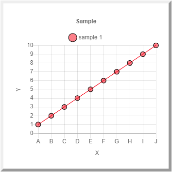

The Data Charting API is built using Chart.js licenses
under the MIT license.
Chart.js Chart.js is an open source
JavaScript library used for data visualization and creating graphs. Chart.js is
highly flexible with a variety of options available at the cost of an increased
programming burden. To alleviate some of that burden, the Data Charting API has
encapsulated and simplified most of those options while providing a reasonable
degree of flexibility. That is the tradeoff. Less overall flexibility that Chart.js,
but a lower learning curve to use the technology.
There are several JavaScript libraries that you will need to import into your
code. Each library can be downloaded and linked into the HTML code of your
choice using the technique shown below.
All charts are created from a JSON object with a fixed set of inputs. There are
various options, laid out in this document, but the basic structure of the JSON
is constant. Additional efficiencies can be derived by formating the JSON as
a result of an external library. The example below shows the JSON object being
created in the JavaScript of the page.
All charts must be created in the context of a DataCharting object. The object
defines the size of all graphs created with that object. The DataCharting object
can be reused, but all datasets created with the same object must have a unique
name. This is important when dealing with multiple data sets
in a single chart. The example shown her uses a 300 pixel x 300 pixel chart size
and is creating a chart from the VAR_Example dataset defined in the JSON object
above. Note that while you can define a smaller or larger size for the chart,
Chart.js automatically defines the scale of the axis and thus the "zoom" level
of the chart.
...
charting = new DataCharting(300, 300);
var mychart = charting.createChart(json, "VAR_Example");
...
The DataCharting object uses the DOM to create a canvas tag and build the
required chart on that tag. The mychart object above is that
tag and it must be appended to an appropriate place on the page. In this
case, that is a cell in a table but the exact position of any chart can be
defined by any number of means or hard-coded into an HTML page.
...
var field = document.getElementById("field");
var table = document.createElement("TABLE");
field.appendChild(table);
var row = table.insertRow();
let td = document.createElement("td");
td.append(myChart);
row.append(td);
Dataset Naming Requirements
DataCarting strips away certain information from the JSON message. As a result,
there are certain conventions and requirements for the name of the data set which
must be followed. There are three requirements. In all other respects the API
accepts all variations.
Always start with 'VAR_'
The leading VAR_ is mandatory and is stripped
from the name by default.
The type parameter dictates the kind of graph. The options are line
graph, bar graph (vertical and horizontal), area graph, pie graph and scatter plot.
Chart.js actually allows multiple types to be joined, but for the sake of simplicity
DataCharting only allows one type per chart.
The x-axis and y-axis parameters define the labels of the
x and y-axis. In the normal orientation (typical of vertical bar, line, area, and
scatter plots), the x-axis is horizontal and the y-axis is vertical. In the reflected
orientation (only found in horizontal bar graphs), this orientation is reversed. Of
course, in the case of a Pie chart, neither axis is meaningful.
The title of the chart, the labels of the data points, and the name of the series
are completely different. The title of the JSON object
appears over the chart. The labels are attached to each data point. Series, however,
are defined for groups of datapoints and can be used to distinguish one set of data
from another, especially for multiple data sets in a single
The series parameter allows any string to be used.
Note that Chart.js does allow multiple Pie charts to be defined, which might necessitate
multiple series, but this is NOT recommended.
The x-data and y-data parameters define the data
displayed in the chart. These have different meanings in different charts.
The x data can be either categorical (e.g. "Red", "Heavy", "Alpha") or numerical,
while the y data must be numerical. This means that one might have different
numerical counts (y data) for "Light", "Dark", and "Medium" (x-data), but it makes
no sense to reverse the situation. In fact, the x data is always as categorical
so that the x-data set [1,2,3,5,4] is perfectly valid and will NOT be reordered.
The one exception to this rule is the scatter plot which allows only numerical data
for either axis.
In the example below, note that the line will accept categorical data or out-of-order
numeric data for the x axis. That is because the x-data is always taken as categorical.
In fact, the x data could contain the same label multiple times without causing a
conflict. Like having two "Daves" in the same room. This creates a psuedo-numeric
scale which can be confusing if your source data has duplicates or is out of order.
In the scatter plot, the x-data is treated as truly numeric and the order difference
becomes aparent.

var numeric1 = [1,2,3,4,5,6,7,8,9,10];
var numeric2 = [10,20,50,60,70,40,80,90,30,100];
var categoric = ['A','B','C','D','E','F','G','H','I','J'];
The modes parameter is a list allowing a variety of option for the
graph. If nothing is passed in for this parameter then the graph will follow the
default options. The options are presented below based on their default and other
modes.
The 'Multi' mode allows several different series
to appear in the same chart. These must have the same title ending with a progressive
numerical id (e.g. "VAR_Data-0", "VAR_Data-2", ect). Do not skip any numbers in the
set. A single JSON object must contain all the data for that chart. Note that the
x-data set for the first series is assumed for all the other series so they match.
Along with multi, is an option for 'Stacked' data.
This is secondary to multi as all non-multi charts look the same. With the stacked
option on, all data is aggregated for each x-data value. The results may reveal
overal trends or percentages of each series out of the whole.
By default all values are considered discretely without respect to each other. If
'Progressive' mode the graph calculates the sum of each y-value
incrementally. Discrete values can show variation, but progressive values can show
the effects of history. Progressive values can vary in a negative or positive
direction. The progressive mode has no impact on Pie or Scatter charts.
The default colorScheme is a rainbow of colors from red to purple with
a backup set of darker middle colors. The user can, however, implement a novel color
scheme using Red-Green-Blue values. If colorScheme is included, the novel color scheme
will be used. The same color schme is applied to all datasets, taking the color scheme
and order from the first (i.e. the '-0') JSON object.
The 'group' parameter is another color option for graphs. The default
color scheme is based on a rainbow set and the user can define
a novel color set. Groups of colors are shades of a single fixed color among the six
primary and secondary RGB colors.